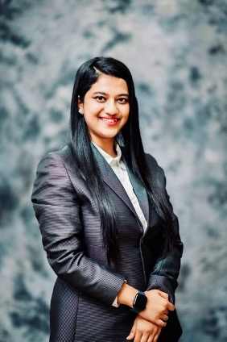

Digital Financial Inclusion
Microfinance, digital payments, credit access and inclusive finance for underserved communities.
Academic + Professional Portfolio
I bridge rigorous research, data analytics and real-world impact across digital financial inclusion, women’s entrepreneurship, AI, sustainability and information systems.

About
I am an emerging researcher at UNSW Business School with a background in MSc Business Analytics from HKUST and Economics from Asian University for Women. My work connects artificial intelligence, information systems, business analytics, digital finance, financial inclusion and women’s entrepreneurship.
Across academic and professional settings, I have worked with large-scale field data, predictive modelling, stakeholder reporting, financial-services workflows and policy-relevant research. My long-term goal is to create inclusive digital finance and AI-enabled solutions for underserved communities.
Research Focus
Microfinance, digital payments, credit access and inclusive finance for underserved communities.
Women entrepreneurs, agency, household constraints and entrepreneurial sustainability.
AI-enabled decision-making, responsible AI, machine learning and analytics for impact.
Digital infrastructures, technology affordances, governance and organisational transformation.
Experience
Researcher in Information Systems and Technology Management.
Business Analyst with exposure to financial services, CDD/KYC workflows, dashboards and AI-enabled automation.
Analyst and Project Lead for a large-scale women entrepreneurship and microfinance analytics project.
HR, DEI and regulatory exposure in a global legal-services environment.
Research and strategic support for financial inclusion, digital transformation and international collaboration.
Leadership
World Economic Forum community engagement across Hong Kong and Chittagong networks.
Global Top 20 Rockstar Campus Director and youth entrepreneurship organiser.
Harvard Crossroads Emerging Leader and HPAIR Gold Delegate.
Asia-Pacific youth dialogue and global innovation lab engagement.
Honours
Contact
Email: saymajafrin07@gmail.com
LinkedIn: linkedin.com/in/saymajafrin07
Medium: medium.com/@sayma.jafrin